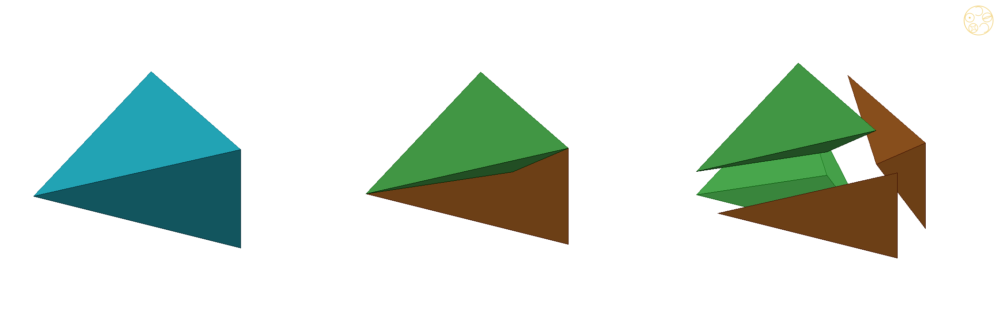
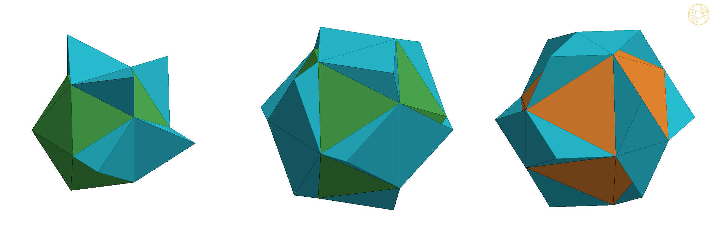
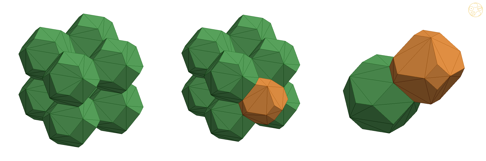
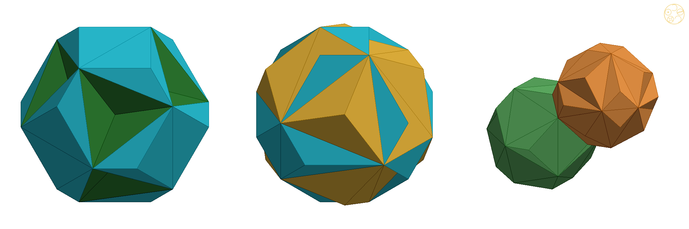
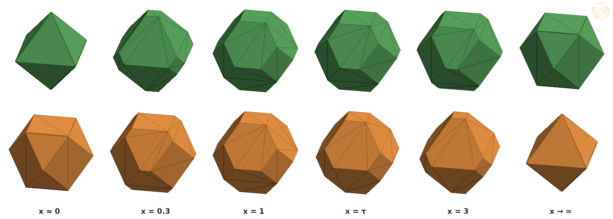

Theorem: in the simple cubic lattice of icosahedra, cutting every AXE from the point that divides its axis in the golden ratio, and giving each of its four pyramids to the neighbour it touches, turns the icosahedra and the Unborns into two convex truncated octahedra, the Icosaxes and the Unborn Axes, which fill space; this is the only such point, and in the Lotus Jewel network the same cut gives a keyed pair, the Lotus Jewel Axes and the Dodecaxes, of volumes √5 and 2
DICTO had a network of icosahedra with a gap he could fill exactly, but the filling pieces stuck out wherever they were glued. He proposed pieces with no odd protrusions, made by cuts "hemispherical, or anywhere in between".
The search behind this paper began with mixtures of the Platonic solids. In Every Mix of the Platonic Solids Fills Space (paper #47 [9]) DICTO proposed that the five Platonic solids, in any combination, can be joined into a filling of space, and we proved it for all 31 mixtures, at one edge length, with seven connecting pieces. That reached the aim; but DICTO conjectured that a greater elegance and simplicity was within reach, fewer and cleaner pieces in which the solids themselves do the work, although at that time it was beyond our grasp. This paper is the answer to that conjecture for the icosahedron and the dodecahedron, the two Platonic solids whose five-fold symmetry keeps them from filling space with copies of themselves. In DICTO's view, these solids are the most elegant solution he had imagined: one golden cut, and two convex pieces, each holding a whole icosahedron or a whole dodecahedron, its core.
On 10 October 2026 DICTO built the icosahedral octet and its Lotus Jewel, the "clawed" icosahedron (Kaleidohedra DISCOVERIES F21). On 23 October he conjectured that the Lotus Jewel network fills space, and proposed finding the piece that fills its gap; the answer was the AXE, exactly six per cubic cell, and with it three exact fillings of the simple cubic icosahedron lattice (the AXE gap study [8]): icosahedra + Unborns + AXE; Lotus Jewels + dodecahedra + AXE; and Lotus Jewel + Tricap + Unborn + AXE kept apart, with any choice of giving each Tricap to one side or the other. The same day DICTO proposed looking for "shadow forms", complementary ways of breaking up the same space, to create new pieces. Fusing neighbouring pieces gave chunky shapes, but every fusion with an AXE kept a spike; giving each AXE whole to one icosahedron fills space with only two kinds of piece, but leaves the icosahedron 68% of its hull, a star. DICTO then set the aim, "unit pieces without odd protrusions", and the tool, polar splits "hemispherical really, or anywhere in between". Cutting the AXE itself, from a point moving along its axis, gave the result of this paper.
Regular icosahedra sit at the corners of a cubic grid, touching their six neighbours along an edge. Between them are two kinds of hole, and both are filled exactly by three pieces.
Let φ = (1 + √5)/2 = τ. Place a regular icosahedron I of edge 1 at every point of the lattice φℤ³, with corners (0, ±½, ±φ/2) and their cyclic permutations; each icosahedron shares one edge with each of its six neighbours along the axes. The cell φ³ = 2 + √5 holds, besides its icosahedron (volume (15 + 5√5)/12):
The icosahedron meets the Unborn along the Unborn's 8 equilateral faces. The Unborn is the regular dodecahedron D of edge 1/φ centred at c with its 8 cube corners cut off: each corner of D that reaches into an icosahedron is a Tricap (Mosseri–Sadoc t3, volume (3 − √5)/24), the tetrahedron D ∩ I standing on one of the icosahedron's faces that meet the Unborn. Giving the 8 Tricaps to the dodecahedron instead of the icosahedra changes the network: the icosahedron minus its 8 Tricaps is the Lotus Jewel J, volume (1 + 3√5)/4, and the Unborn plus its 8 Tricaps is D, volume (15 + 3√5)/12. Per cell, I + U + 6 AXE = J + D + 6 AXE = φ³ exactly, and both fill space with no gap; so does every assignment of the Tricaps [8].
Pick one point inside each AXE and cut the AXE into four pyramids, each with one AXE face as its base. Give each pyramid to the piece its base touches. The AXE is gone; the question is only where to put the point.
For an AXE with long edge AB and short edge CD let m1, m2 be their midpoints, and for 0 ≤ t ≤ 1 let p(t) = m1 + t(m2 − m1), a point of the AXE's axis (the line through m1 and m2 is its two-fold axis). The split at t replaces the AXE by the four pyramids with apex p(t) over its faces; the two over ABC and ABD join the icosahedra those faces lie on, the two over CDA and CDB the Unborns. Every icosahedron touches 12 AXE faces and every Unborn 12, so each gains 12 pyramids; the pieces still fill space, since only the owner of each part of each AXE has changed. Write I(t) and U(t) for the padded pieces. The golden split is t = 1/φ.
Why it is true: every corner of every piece is a sum of halves and golden numbers, so everything can be checked with exact arithmetic. Convexity is checked by comparing two volumes: the pieces glued together, and the smallest convex solid around them.
Proof. All coordinates lie in ℚ(√5), and the study's check [8a] works in that field with no floating point. (a), (b): the padded piece is the union of the core and its 12 pyramids, whose volumes are exact determinants; its convex hull is found exactly (every plane through three of its points with all points on one side), and its volume computed exactly. The two volumes are equal, (15 + 5√5)/12 + 12 pyramids = 1 + 2√5/3 for the Icosaxes and (3 + 7√5)/12 + 12 pyramids = 1 + √5/3 for the Unborn Axes, so the union is its own hull, which is convex. The hull has 24 corners and 14 faces, 8 with six corners and 6 with four, and its corner set is exactly the stated orbit, which is invariant under all permutations and sign changes of the coordinates: hence (c)'s symmetry. The side lengths and the congruence of the hexagons (all 15 distances between their corners) are compared exactly. (d) is the sum above. (e): the 12 apices p(1/φ) are compared, as a set, with the core's corners under (x, y, z) ↦ (y, x, z). (f): the pieces fill space because the split only re-assigns parts of the AXE in a filling [8]; the shared faces are found by comparing corner sets: the hexagon of an Icosaxes towards (1, 1, 1) is, corner for corner, the hexagon of the Unborn Axes at c facing back, and the square of an Icosaxes at x = φ/2 is the square of its neighbour at (φ, 0, 0); the others follow by symmetry. The check passes all its 20 tests; a 500,000-point test of the filling (in floating point, as a second check) finds no point uncovered and none covered twice. ∎

Move the cutting point a little towards the Unborns and the Icosaxes grows a ridge; move it the other way and the Unborn Axes does. Only at the golden point are both smooth.
Why: some faces of the icosahedron get no pyramid, so they stay on the outside. As soon as the cutting point passes the golden point, a pyramid tip pokes out past one of those faces, and a solid with something poking out past its own face is not convex. The Unborn has the same kind of faces, and its tips poke out when the point moves the other way.
Proof. The icosahedron's 8 faces that meet Unborns carry no pyramid, so they stay on the boundary of I(t); if I(t) were convex, every apex would lie on the inner side of their planes. The apex p(t) moves linearly in t, so its signed distance from each such plane is d0 + t·d1 with exact d0, d1. For 24 pairs (apex, face) this distance is zero exactly at t = 1/φ, with d1 > 0: for t > 1/φ those apices are outside, and I(t) is not convex. The same holds for the Unborn's 8 equilateral faces, which carry no pyramid, with d1 < 0: U(t) is not convex for t < 1/φ. With the Main theorem, both are convex at t = 1/φ. ∎ (In floating point the sweep shows more: I(t) is convex for all t ≤ 1/φ and U(t) for all t ≥ 1/φ, Table 1.)
| t | 0 | 0.2 | 0.4 | 0.6 | 1/φ | 0.7 | 0.8 | 1 |
|---|---|---|---|---|---|---|---|---|
| Icosaxes I(t): fill of hull | 100% | 100% | 100% | 100% | 100% | 93.6% | 86.9% | 76.0% |
| Unborn Axes U(t): fill of hull | 58.2% | 67.6% | 79.8% | 97.9% | 100% | 100% | 100% | 100% |
Table 1. How much of its convex hull each padded piece fills, as the cutting point moves from the long edge (t = 0: the Unborns take the whole AXE) to the short edge (t = 1). 100% means convex. Floating point (study script axesplit1.py); the exact statement is Theorem 2.


In the Lotus Jewel network the eight Tricaps belong to the dodecahedra, not the icosahedra. After the golden split they show up as eight keys on the small piece and eight matching dents in the big one.
Why: the Tricaps sit on the faces where icosahedron and Unborn meet, and the AXE pyramids sit on other faces, so the two never get in each other's way. Moving a Tricap from one side to the other only moves volume across a shared face, so the pieces still fill space whichever way each Tricap goes.
Proof. The AXE faces lie on faces of I and U that are not touched by the Tricaps (the Tricaps lie on the icosahedron's 8 faces that meet Unborns, which carry no pyramid), so the same 12 pyramids join J and D. The volumes are 1 + 2√5/3 − 8(3 − √5)/24 = √5 and 1 + √5/3 + 8(3 − √5)/24 = 2, checked exactly in [8a]. Each Tricap stands on one of the icosahedron's faces that meet Unborns, which lies in a hexagon of the Main theorem. Every assignment of the Tricaps fills space before the split [8]; the split re-assigns only AXE parts, so it fills space after. ∎
So the whole family of the AXE gap reduces to one golden pair of truncated octahedra in three forms: smooth (Icosaxes and Unborn Axes), keyed (Lotus Jewel Axes and Dodecaxes), or any mixture, hexagon by hexagon, in which each hexagon is flat or keyed one way or the other. Every such piece is convex apart from its keys and dents, which fit into each other like a three-dimensional jigsaw. The patterns of the Mixed blocks world (layers, rods, checker, pyrochlore) [8] carry over unchanged. Each piece has flat, parallel squares top and bottom.

The golden pair is one member of a whole family. Slide one flat cut through every small cube of the lattice and you get a big and a small truncated octahedron that fill space together, for every position of the cut. DICTO’s “factor x” is that position; the golden ratio is where the icosahedron appears inside.
Why: cut space into small cubes, half the lattice spacing on a side. Each small cube has a lattice point at one corner and a cube centre at the opposite corner, and one flat cut across its long diagonal shares it between them. The two truncated octahedra are exactly what these shares add up to.
Proof. With scale s = L/(2(1 + x)), T(x) is the intersection of the cube |pi| ≤ L/2 and the octahedron |p1| + |p2| + |p3| ≤ k(x), where k(x) = (1 + 2x)s = L(1 + 2x)/(2(1 + x)); since L/2 < k(x) < L, its corners are where three of these planes meet, the stated orbit. Likewise T(1/x) has k(1/x) = L(x + 2)/(2(x + 1)), and k(x) + k(1/x) = 3L/2. Space is the union of the small cubes of side L/2 with corners in (L/2)ℤ³; each has a lattice point at one end of a long diagonal and a cube centre at the other, and lies in the cube of side L around each of these two and in no other such cube. In the small cube [0, L/2]³ the lattice-point piece is {p1 + p2 + p3 ≤ k(x)} and the centre piece is {(L/2 − p1) + (L/2 − p2) + (L/2 − p3) ≤ k(1/x)} = {p1 + p2 + p3 ≥ 3L/2 − k(1/x) = k(x)}: they share the small cube along one plane, with no gap and no overlap. The same holds in every small cube by symmetry, so the pieces fill space; the plane carries a common hexagon of the two pieces, and the cube faces at distance L/2 carry squares shared with the next piece of the same kind. ∎ (A 300,000-point test agrees for x = 0.3, 0.5, 1/τ, 0.8, 1, 1.25, τ, 2, 3; study script factorx.py.)
So the golden split picks out, in a one-parameter family of mixed space-fillers that are each simple to build, the one member that is also a filling by icosahedra, Unborns and AXE. As a family of weighted Voronoi cells this is not surprising [6]; what singles out x = τ is that its corners are those of an icosahedron and its mirror image (Main theorem (e)).

Remark (tetrahedron, octahedron, cube). DICTO proposed the same approach for the tetrahedron, the octahedron and the cube. A first computation (floating point; prior work not yet checked) shows the octet, regular tetrahedra and octahedra, in the middle of such a family: cut every double cone from a tetrahedron's centre through a shared face to an octahedron's centre by a plane parallel to the face, a fraction t of the way. At t = 0 the octahedra take everything and are rhombic dodecahedra; for 0 < t < 1/3 small tetrahedra sit between rhombic dodecahedra with their eight three-fold corners cut; t = 1/3 is the octet; for 1/3 < t < 1 small octahedra sit between cubes with four alternate corners cut; at t = 1 the tetrahedra take everything and are cubes. So the octet lies halfway on a road of mixed space-fillers from Kepler's rhombic dodecahedron to the cube. A full treatment is left to a later paper.
This paper is about mixed space-fillers: two different solids that cannot fill space alone but do fill it together. A lattice of icosahedra leaves two kinds of hole, and the thin AXE pieces between them always stuck out. Cut each AXE at the golden point and share it out, and everything becomes two clean, convex pieces, the Icosaxes and the Unborn Axes, that fill space together. They belong to a whole family set by one number, the factor x, and the golden ratio is the member that holds the icosahedron. The Lotus Jewel version of the same cut gives a pair that locks together with keys.
It answers the conjecture DICTO made after paper #47 [9], that a more elegant and simpler mixed filling was within reach. The golden split answers his two aims at once: unit pieces with no odd protrusions, and a cut "anywhere in between" that is chosen by the geometry itself. Three pieces that cannot fill space alone (icosahedron, Unborn, AXE) become two convex space-fillers with full octahedral symmetry, so icosahedral pieces assemble into a cubic, octahedral whole; the AXE, which the literature uses in aperiodic tilings, here fills a periodic one and then dissolves into it. The keyed forms add a jigsaw on top: every hexagon can be flat or keyed either way, and every such choice fills space; and the factor x turns the pair into a family of mixed space-fillers, from Kelvin’s cell at x = 1 to the golden pair at x = τ. Open questions: the same method for the tetrahedron, octahedron and cube (the octet and its relatives); the golden split in the other AXE networks and with other cutting points off the axis; the polar splits of the icosahedron and the Unborn themselves; and physical, printed sets of the keyed pieces.
The two smooth shapes have been described before, as shapes. What we did not find anywhere is how they arise from the icosahedron lattice, the golden cut that makes them, and the keyed pair.
Known. (i) Koca, Koca, Al-Ajmi and Al-Sheriani [1, §4.3, eq. 49] show that the union of a pseudoicosahedron and its mirror image is a non-regular truncated octahedron, the orbit a1(1, x, 0) of the octahedral group; with their pseudoicosahedron ±(1 + x)e1 ± x e2 (cyclic) [1, eq. 39], the Icosaxes is their case x = τ (the regular icosahedron and its mirror image) and the Unborn Axes their case x = 1/τ (the Unborn and its mirror image); Main theorem (e) is this statement for our pieces. (ii) The Polytope Wiki [4] describes the semi-uniform truncated octahedron (8 ditrigons, 6 squares, full octahedral symmetry) and notes that alternating it gives a pyritohedral icosahedron, regular when the ditrigon–ditrigon edge is (√5 − 1)/2 of the square–ditrigon edge: the Icosaxes. (iii) The regular truncated octahedron is the Voronoi cell of the body-centred cubic lattice (Kelvin's cell; the bitruncated cubic honeycomb [5]); unequal truncated octahedra on a body-centred lattice arise as weighted Voronoi (power, Laguerre) cells [6]; since the Icosaxes and the Unborn Axes share their hexagon with the two edge lengths swapped, their filling in (f) may be seen as a member of that family, and we do not claim the bare tiling. (iv) The AXE and the Tricap are Mosseri–Sadoc tiles, used so far in aperiodic, icosahedral tilings [2, 3]. (v) As context only: the 1/1 approximant α-(AlMnSi) has the same space group Pm3̄ with icosahedral clusters at the cube corners and centres [7].
Not found, in the sources listed in Appendix A: the simple cubic icosahedron lattice filled by icosahedra, Unborns and AXE turned into these two truncated octahedra; the golden split and its uniqueness (Theorems 1 and 2), including the apices landing on the mirror images; and the keyed pair with its free keyings (Theorem 3). "Not found" is limited to those sources; it is not a claim that nobody has seen it.
The Icosaxes, Unborn Axes, Lotus Jewel Axes and Dodecaxes are being added to Polyhedraverse among DICTO's pieces, with a Kaleidohedra world beside the AXE networks in which the keys can be set by pattern or flipped one hexagon at a time, with X-ray showing the cores and the AXE pyramids (https://dictospheres.com).
[1] M. Koca, N. O. Koca, A. Al-Ajmi, F. Al-Sheriani, "Quaternionic representations of the pyritohedral group, related polyhedra and lattices", arXiv:1506.04600 (2015); as "Symmetry of the pyritohedron and lattices", SQU Journal for Science 21(2) (2016) 139–149, doi:10.24200/squjs.vol21iss2pp139-149.
[2] R. Mosseri, J. F. Sadoc, "Two and three dimensional non-periodic networks obtained from self-similar tiling", in The Structure of Non-Crystalline Materials, Taylor and Francis, London (1982), as cited in [3]; reprinted in P. J. Steinhardt, S. Ostlund (eds.), The Physics of Quasicrystals, World Scientific (1987) 720–734.
[3] N. Ozdes Koca, R. Koc, M. Koca, A. Al-Siyabi, "Dodecahedral structures with Mosseri–Sadoc tiles", Acta Crystallographica A 77 (2021) 105–116; arXiv:2009.07048.
[4] Polytope Wiki, "Truncated octahedron" and "Pyritohedral icosahedron", https://polytope.miraheze.org (viewed 23 October 2026).
[5] "Bitruncated cubic honeycomb", Wikipedia (viewed 23 October 2026).
[6] F. Aurenhammer, "Power diagrams: properties, algorithms and applications", SIAM Journal on Computing 16 (1987) 78–96.
[7] M. Cooper, K. Robinson, "The crystal structure of the ternary alloy α(AlMnSi)", Acta Crystallographica 20 (1966) 614–617, doi:10.1107/S0365110X6600149X.
[8] DICTO, The AXE gap (study 2026-10-23-axe-gap, Kaleidohedra repository, commit 5f6c20d): the three exact fillings of the simple cubic icosahedron lattice, the Unborn, AXE and Tricap volumes, and every Tricap assignment. [8a] DICTO, Shadow forms (study 2026-10-23-shadow-forms, commit 726f769), exact/golden_split_exact.py → golden-split-exact.txt.
[9] DICTO, "Every Mix of the Platonic Solids Fills Space", paper #47, DICTO DOI: 10.5281/zenodo.23551326 (2026).
DICTO's reference library (kaleidohedra-references: manifest, reading list, Fedorov 1885 chapter 13): nothing on these fillings. Read in full: Koca et al. 2015 [1]. Web, 23 October 2026: Polytope Wiki [4]; Koca et al. 2021 [3] and the Mosseri–Sadoc literature (aperiodic only); Wikipedia, truncated octahedron and bitruncated cubic honeycomb [5]; Laguerre and power-diagram tessellation papers [6]; α-(AlMnSi) structure papers [7]; quadibloc, "Filling space with polyhedra"; ProofWiki, "Icosahedron inscribed in octahedron"; searches for two kinds of truncated octahedra on a body-centred lattice, for pyritohedral truncated-octahedron space-fillers, and for icosahedra in a simple cubic lattice with pseudoicosahedral voids. Not checked: Wolfram PolyhedronData, Stella / Great Stella libraries.
| Piece | Corners (centred) | Faces | Volume |
|---|---|---|---|
| Icosahedron I | (0, ±½, ±φ/2), cyclic | 20 triangles | (15 + 5√5)/12 ≈ 2.181695 |
| Unborn U | (±φ/2, ±1/(2φ), 0), cyclic | 8 equilateral, 12 isosceles (1, 1, 1/φ) | (3 + 7√5)/12 ≈ 1.554373 |
| AXE (M–S t6) | e.g. (∓½, φ/2, 0), (0, φ/2 ± 1/(2φ), φ/2) | 4 triangles; edges five 1, one 1/φ | 1/12 |
| Tricap (M–S t3) | I ∩ D | 4 triangles | (3 − √5)/24 ≈ 0.031831 |
| Icosaxes | (±½, ±φ/2, 0), all permutations | 8 hexagons, 6 squares (side 1/√2) | 1 + 2√5/3 ≈ 2.490712 |
| Unborn Axes | (±1/(2φ), ±φ/2, 0), all permutations | 8 hexagons, 6 squares (side 1/(φ√2)) | 1 + √5/3 ≈ 1.745356 |
| Lotus Jewel Axes | Icosaxes minus 8 Tricaps | keyed (8 dents) | √5 ≈ 2.236068 |
| Dodecaxes | Unborn Axes plus 8 Tricaps | keyed (8 keys) | 2 |
Lattice φℤ³, cell volume φ³ = 2 + √5; Icosaxes and Lotus Jewel Axes at lattice points, Unborn Axes and Dodecaxes at the cube centres (φ/2)(1, 1, 1) + φℤ³. Golden split point p = m1 + (1/φ)(m2 − m1).